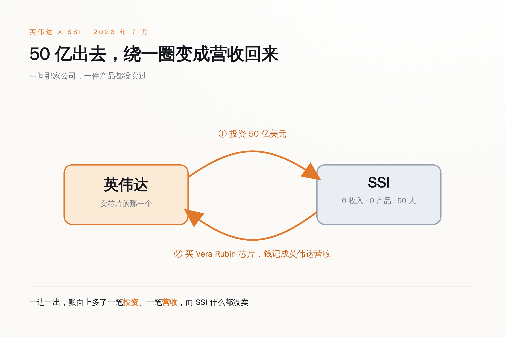
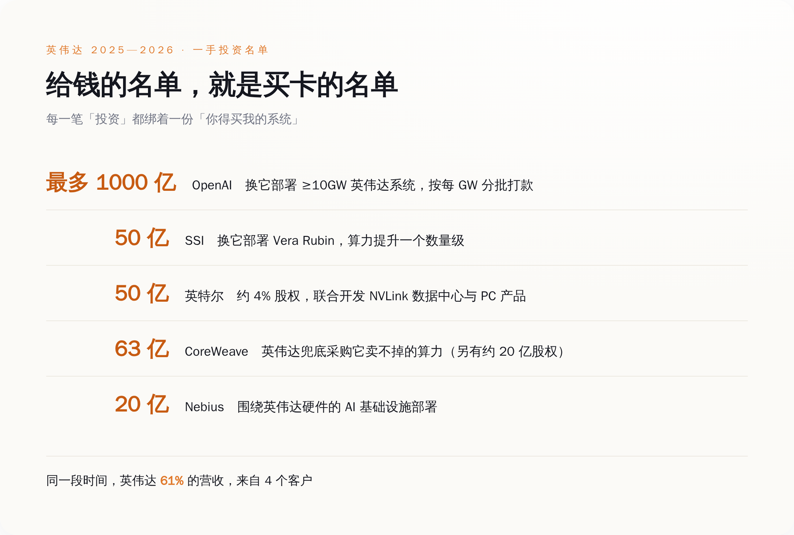
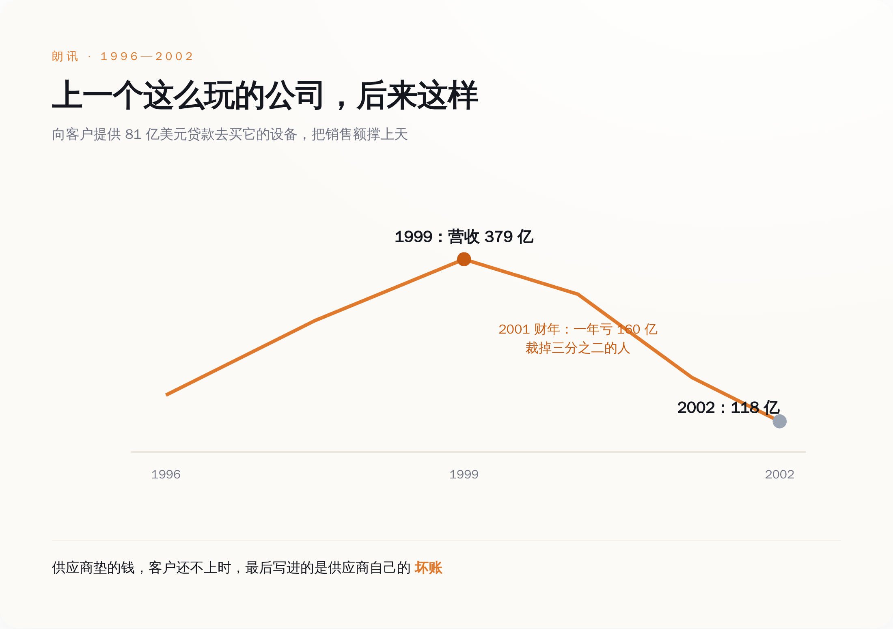

导语
先说一家公司。它成立于 2024 年 6 月，到今天满打满算两年出头，大约 50 个人。它没有发布过任何产品，没有 App，没有 API，没有一行能对外收费的代码，官方公开承诺"在造出安全的超级智能之前不发布任何东西"。翻它的财务，收入这一栏写着零。就这么一家公司，估值 320 亿美元。7 月 27 日，英伟达宣布再给它投 50 亿美元——注意是"再"，因为去年那轮 20 亿的融资里，英伟达已经投过一次了。这家公司叫 SSI，Safe Superintelligence，创始人是从 OpenAI 出走的伊利亚·苏茨克维。所有报道都在讲苏茨克维的天才、讲"安全超级智能"的宏大愿景。但这笔钱最有意思的地方，报道里几乎没人说破：英伟达打给 SSI 的这 50 亿，绕一圈，会以订单的形式，变回英伟达自己的营收。
一、先把这家拿钱的公司看清楚
苏茨克维是谁不用多介绍，AlexNet 的作者之一，深度学习这波浪潮最上游的那几个人里的一个，从 OpenAI 出来单干，光凭这份履历，融资不难。难的是他给这家公司立的规矩：不发产品，不做迭代，不搞商业化，一门心思憋一个"安全超级智能"，憋出来之前对外什么都不给。
这套打法在投资圈叫"直球"（straight-shot），听着很酷，翻译成人话就是：在一个说不清哪年能到的终点之前，这家公司不产生任何收入。
然后我们看它的融资曲线。2024 年 9 月，成立三个月，融 10 亿，估值 50 亿。2025 年 4 月，融 20 亿，估值直接跳到 320 亿——这一轮的投资方里就有英伟达和谷歌。2026 年 7 月，英伟达单独再追加 50 亿。两年，一件东西没卖出去，估值翻了六倍多，累计募了大约 70 亿美元现金。
一家公司值多少钱，和它卖过多少东西，在 2026 年可以完全没有关系。这句话本身不新鲜，风投行业向来为"未来"付钱。真正值得盯着看的是这次投钱的人是谁。红杉、a16z 投 SSI，是财务投资，赌苏茨克维赌对了能几十倍退出，天经地义。但英伟达不是财务投资人，英伟达是卖芯片的。一个卖铲子的，为什么要往一个还没开始挖矿、明确说了短期不打算挖矿的矿工兜里，塞两次钱？
英伟达自己在新闻稿里给的说法很体面。黄仁勋说："伊利亚从 AlexNet 开始就在现代 AI 的地基上做出了根本性的突破，我们很期待看到 SSI 在我们的 Vera Rubin 平台上跑出新的突破。"苏茨克维那边接得也顺："我们有值得规模化的研究成果，一台大的英伟达计算机能让我们把它跑起来……我们对押注 Vera Rubin 平台很有信心。"
翻译一下这两句官话的交集，就一个词：Vera Rubin——英伟达下一代的旗舰芯片平台。英伟达给 SSI 的这 50 亿，附带的条件是 SSI 部署 Vera Rubin 系统，把自己的算力"提升一个数量级"。
钱和货，在同一份新闻稿里，握了手。
二、这 50 亿是怎么变回英伟达营收的
把这笔交易拆成两个动作看，就清楚了。
动作一，英伟达从自己账上掏出 50 亿美元，打给 SSI，换来 SSI 的一部分股权。这笔钱在英伟达的报表上，记成一笔"投资"。
动作二，SSI 拿着这笔钱（以及别的钱），去采购英伟达的 Vera Rubin 系统。这笔采购在英伟达的报表上，记成"营收"。

这个环，英伟达在别处玩得更直白。2025 年 9 月，英伟达和 OpenAI 签的那份意向书里，条款写得明明白白：英伟达将向 OpenAI 投资最多 1000 亿美元，随 OpenAI 每部署 1 吉瓦（GW）算力分批到账；OpenAI 则用英伟达的系统部署至少 10GW、相当于几百万块 GPU。英伟达官方对这套结构的描述是——OpenAI 用现金向英伟达买芯片，英伟达用现金买 OpenAI 的非控股股权。
两笔现金，方向相反，金额挂钩，写在同一份协议里。你付我买卡的钱，我付你股权的钱，谁也没占谁便宜，但账面上，一边多了千亿营收的想象空间，一边多了千亿估值的注脚。
供应商亲自下场，掏钱给买家去买自己的东西，这不是生意的润滑剂，这就是生意本身。三、这不是一笔买卖，是一条流水线
如果只有 SSI 一家，你还可以说这是英伟达对老朋友的偏爱。问题是，这样的对象排起来是一长串。

这里面最露骨的是 CoreWeave 那一笔。CoreWeave 是家 AI 云服务商，买英伟达的卡搭数据中心，再把算力租出去。英伟达先投了它约 20 亿股权，然后又和它签了一份 63 亿美元的协议：如果 CoreWeave 建起来的算力，现有客户没租满，英伟达自己把剩下的买单。
一个卖芯片的，一边给你钱买它的芯片，一边承诺"你用我的芯片建的东西如果卖不出去，我兜底"。这已经不是投资了，这是给需求上保险，保的是自己的营收。
单看数字，英伟达在上一个财年里向私营公司投了 175 亿美元，官方口径是"主要支持早期创业公司"。这是它自己交给美国证监会的文件里写的数。而它的营收有多大？2027 财年第一季度（截至 2026 年 4 月 26 日）总营收 816 亿美元，其中数据中心业务 752 亿。营收是投资的四倍多，看着投资只是零头。
但零头不是重点。重点是那 61%——英伟达自己披露，四个直接客户，每个都贡献超过 10% 的营收，加起来占了六成一。你再把上面那张名单摆过来对一眼：这几个大客户里，有好几个的买卡钱，是英伟达先垫进去的。营收高度集中在少数几个买家，而这几个买家，又高度依赖英伟达的投资和担保活着。
这条链子转得越快，账面越好看，也越像一个只能往前不能停的东西。
四、这套打法上一次登场，主角叫朗讯
垫钱给客户买自己的设备，好把销售额做上去——这个玩法不是英伟达发明的。上一次它大规模登场，是在 2000 年前后的电信业，主角是一家叫朗讯（Lucent Technologies）的公司。

朗讯当年做的事，逐字对得上今天：它给买不起设备的电信客户提供贷款，让他们拿这笔钱来买朗讯的交换机、路由器，有时候连安装都替你包了。靠这招，它的账面销售额冲得极猛，华尔街看着漂亮。到 1999 年，朗讯营收冲到 379 亿美元，一度是全美市值最高的公司之一。它累计承诺出去的客户贷款，高达 81 亿美元。
然后周期转向了。它借了 20 亿给一家叫 WinStar 的电信运营商，WinStar 撑不住了，来要最后一笔 9000 万的续贷，朗讯拒了，WinStar 直接破产。这种事一多，那些"销售额"露出了本来面目——它们不是卖出去的钱，是借出去、收不回来的钱。2001 到 2002 两年，朗讯为坏账计提了大约 35 亿美元。2001 那一个财年，它亏了 160 亿美元，裁掉三分之二的员工。到 2002 年，营收从峰值的 379 亿掉到 118 亿，只剩三成，市值蒸发了约 2500 亿美元。
我不是说英伟达就是下一个朗讯。两者有本质区别：英伟达的芯片现在是真的抢手，数据中心是真的在满负荷跑，全球算力是真的短缺——这些需求里有一大块是结结实实的真需求，不是印出来的。朗讯当年的电信设备可没这个待遇。
但朗讯的教训不在"设备卖不动"，在别的地方：当供应商亲自下场给买家垫钱，它自己账上的"营收"和"投资"，就和买家的偿付能力绑死了。买家还得起，这笔生意皆大欢喜；买家还不起，垫出去的钱不会消失，它会换个名字，从"营收"变成"坏账"，回到供应商自己的报表上。SSI 这样的对象尤其值得记着——一家零收入的公司，它拿什么还？它还的是苏茨克维那个终点能不能到。
五、真正该担心的，是你分不清哪部分是真的
这套循环玩到今天，已经大到监管和空头都开始盯着看了。做空过 2008 年次贷的迈克尔·伯里，最近直接开炮，说英伟达这种"循环开支"已经到了"圣经级别的规模"，还点出英伟达的五年期信用违约互换（相当于市场给它买的"违约保险"）年内涨了近九成。国际货币基金组织和国际清算银行，也都把 AI 领域的循环融资列进了系统性风险的提示里。
当然有人不同意。有华尔街策略师说得也在理："循环融资是个信号，不是判决"，背后是实打实、长期存在的全球算力短缺。这话没错。算力短缺是真的，英伟达的芯片是真的好，这些都不假。
问题恰恰出在"真的"和"印的"混在了一起、而且账面上长得一模一样。当英伟达给 OpenAI 千亿、给 SSI 两次共几十亿、给 CoreWeave 的过剩算力兜底，这些钱变成的订单，确实会出现在营收里，和一个素不相识的客户真金白银下的单，记在同一栏，一个数，分不出彼此。
需求可以是真的，也可以是供应商自己印的；在报表上，这两种需求，长得一模一样。所以回到开头那家公司。SSI 值不值 320 亿，苏茨克维能不能造出安全超级智能，这些我不知道，也没人现在知道。我只知道一件确定的事：英伟达打给它的 50 亿，会有很大一部分，变成英伟达自己的一笔营收，出现在某个季度的财报里，被算进那个"数据中心业务同比增长 92%"的漂亮数字。
那个数字里，有多少是全世界真的需要算力，有多少是英伟达先把钱塞给买家、再自己买回来的——没有一个投资者能拆得开。而拆不开这件事，比任何一次单独的暴跌，都更值得担心。